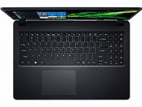
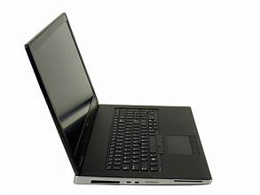
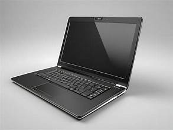
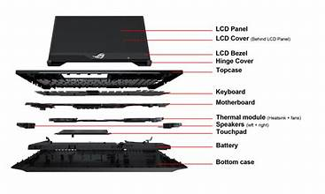

This image shows the front view of a laptop computer. The laptop combines a display screen, keyboard, and processing components into a portable device for work and study. It supports a wide range of software applications. The compact design makes it easy to carry.
This image presents the laptop from a side angle, showing its slim and compact design. The lightweight construction makes it easy to carry and use in different locations. Multiple ports are available for connecting external devices. Its sleek appearance adds to its portability.
This image displays the laptop in an open position, ready for use. It provides access to applications, internet browsing, programming, and multimedia tasks. The keyboard and touchpad allow easy interaction. It is widely used for education, business, and entertainment.
This image illustrates the internal parts of a laptop, including the display, keyboard, motherboard, battery, and storage devices. These components work together to perform computing functions. The efficient design ensures reliable performance. Proper maintenance helps extend the device's lifespan.